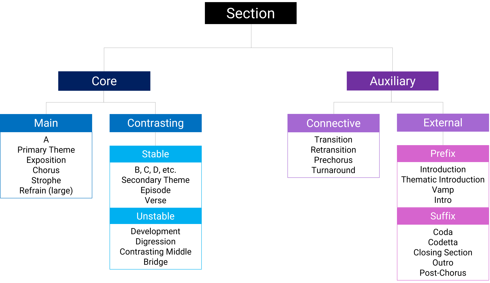

Open Music Theory：繁體中文版
曲式段落概論
查看英文原文
Key Takeaways
- Analyzing musical form involves determining the identity and function of musical spans.
- Musical sections are either core or auxiliary.
- Core sections are either main or contrasting.
- Auxiliary sections are either external or connective.
曲式段落概述
理解作品的曲式，通常要依各段音樂彼此相似或對比的方式，將作品劃分為不同的時間區段；再依音樂材料的身分，以及該段落在整首作品中的「功能」加以分類。曲式功能最廣的兩類是核心段落與輔助段落。[1]下方例 1 彙整常見段落類型的層級關係。最上層先分為核心與輔助；核心段落再分為主要與對比，輔助段落則分為外部與連接兩類。
{kind=link}

Section＝段落。
- Core＝核心；
- Main＝主要：A、Primary Theme＝主部主題、Exposition＝呈示部、Chorus＝副歌、Strophe＝歌節、Refrain (large)＝大型疊句。
- Contrasting＝對比；
- Stable＝安定：B/C/D等、Secondary Theme＝副部主題、Episode＝插部、Verse＝主歌；
- Unstable＝不安定：Development＝發展部、Digression＝離題段、Contrasting Middle＝對比中段、Bridge＝橋段。
- Auxiliary＝輔助；
- Connective＝連接：Transition＝過渡段、Retransition＝再過渡段、Prechorus＝副歌前段、Turnaround＝回轉進行。
- External＝外部；
- Prefix＝前綴：Introduction＝導奏、Thematic Introduction＝主題導奏、Vamp＝反覆伴奏型、Intro＝前奏；
- Suffix＝後綴：Coda＝尾聲、Codetta＝小尾聲、Closing Section＝結束段、Outro＝尾奏、Post-Chorus＝副歌後段。
查看英文原文
Overview of Formal Sections in General
Understanding the form of a musical work typically involves breaking it down into spans of time, based on how each span is similar to and/or contrasts with other spans. These spans are then classified based on the identity of their musical material and how the section “functions” in the context of the piece. The two largest categories of formal function are core sections and auxiliary sections.[1] Example 1 below summarizes the hierarchical relationship between some of the most common section types. At the broadest level, musical sections are either core or auxiliary. Core sections are either main or contrasting, and auxiliary sections are either external or connective.
核心段落
例 1 的核心段落，通常負責引入並重複作品的主要音樂內容。可以這樣想：若有人問這首曲子「是怎麼唱的」，你可能會唱給他聽的部分，就是核心段落。也可以把它們理解為包含作品主題的段落，不過「主題」一詞可有廣義或狹義用法。核心段落也常會重複，這是它們較容易留下深刻印象的另一個原因。
查看英文原文
Core Sections
The core sections identified in Example 1 typically introduce and repeat a work’s primary musical content. You can think of them as the sections you might sing for someone if they asked you how the work “goes.” You can also think of core sections as containing the work’s themes, though the term “theme” can be used in a broad or specific sense. Core sections also tend to repeat, which is another reason they will often make a stronger impression on your memory.
主要段落
主要段落通常是最先呈現主要音樂內容的段落，之後往往還會重複出現，並帶有相對安定的感覺。
查看英文原文
Main Sections
Main sections are typically the first section that presents primary musical content; they are usually repeated later in the work and are characterized by a relative sense of stability.
術語
主要段落的名稱，會隨樂種與曲式的慣例改變；這裡的曲式是指有特定名稱的形式。一般討論曲式時，主要段落可稱為 A；在特定曲式中，則可能有以下名稱，但不限於這些：
查看英文原文
Terminology
The terms for main sections change depending upon the conventions of the genre and form (if it is a form with a name). When thinking about form in general, the main section should be called A, but within a known form, it may go by many names, including but not limited to:
- primary theme (sonata)
- refrain (rondo or verse-refrain)
- exposition (sonata)
- theme from a set of variations
- chorus (verse-chorus)
- dance chorus (verse-chorus)
- strophe (AABA and strophic)
對比段落
對比段落在情緒與安定程度上差異很大，因此不容易概括。有時它完全安定，主要只是因為排在第二而非第一，才形成對比；有時，它卻可能是全曲最不安定的段落。
不安定的對比段落，可能與具連接功能的輔助段落（下文將定義）共享許多音樂特徵。差別在於是否視為核心段落：對比段落聽起來是作品中一個主要的所在，連接段落則像是兩個核心段落之間的地帶。若兩者界線模糊，可以依整首作品的曲式慣例判斷，或使用多重功能描述，例如轉化（becoming），讓分類準確而不勉強。
查看英文原文
Contrasting Sections
Contrasting sections are hard to generalize, since they can vary in affect and stability. In some cases, the section is perfectly stable, and it contrasts mainly because it comes second instead of first; in other cases, a contrasting section may be the most unstable section of the work.
Unstable contrasting sections may share many musical features with connective auxiliary sections (defined below). The distinction lies in whether or not it is considered a core section: contrasting sections sound like a primary place in the work, whereas connective sections sound like a place between two core sections. In cases where the line between the two is blurry, a decision can be made based on the conventions of the overall form of the piece, or multiple formal descriptors (e.g., becoming) can be used to create an accurate and unforced classification.
安定性
曲式上的安定性，指一段音樂帶來的緊張或平靜感。作品中相對的安定程度，常用來劃分曲式，也關係到音樂如何營造戲劇性：它能產生推進力，並引導聽者依對該樂種或風格其他作品的經驗，期待接下來可能發生什麼。
兩者常見的特徵，可能包含下列若干項的組合，但不限於此：
由於作品常以安定段落開始，如果一開頭就是不安定的對比段落，通常會聽起來不太尋常。
查看英文原文
Stability
Formal stability is the sense of tension vs. calmness in a portion of music. A relative sense of stability in a work is a common means of delineating form, and it is an important dramatic concern for creating momentum and engaging a listener’s expectations about what might happen, given their familiarity with how other pieces in a given genre/style behave.
Common features for each might include some combination of the following, among others:
-
- Stability: relatively less change, consistent or decreasing dynamic level, tonic expansions, regular hypermeter, no modulation, diatonic melody, and diatonic harmony
- Instability: relatively more change, increasing dynamic level, extreme registers, increased chromaticism (tonicization), increased rhythmic activity, modulation, sustained dominant, sequences (especially chromatic ones), irregular hypermeter, and irregular phrase lengths
Because it’s statistically common for works to start with a stable section, an unstable contrasting section would likely sound unusual at the beginning of a work.
術語
一般討論曲式時，第一個對比段落標為 B，之後每出現新的段落，就依字母順序標為 C、D、E 等。在特定曲式中，對比段落可能有以下名稱，但不限於這些：
查看英文原文
Terminology
In terms of form in general, the first contrasting section is labeled B, and each subsequent new section receives the next letter of the alphabet (C, D, E, etc.).Within a known form, contrasting sections go by many names, including but not limited to:
- Stable
- secondary theme (sonata)
- episode (rondo, fugue)
- Note: episodes are just as often unstable
- verse (verse-chorus)
- Unstable
- development (sonata)
- episode (rondo, fugue)
- digression (binary)
- contrasting middle (binary)
- bridge (multiple popular song forms)
- Note: “bridge” in this context is referring only to popular-form terminology
輔助曲式段落
查看英文原文
Auxiliary Formal Sections
In addition to the core sections of a work, other sections may introduce, follow, or come between these core sections. These sections are called auxiliary sections, and there are two general categories: external and connective.
外部輔助段落
前綴
前綴（Rothstein 1989）指的是出現在樂句或作品常規開頭之前的音樂，在曲式上帶來「開始之前」的感覺。它可分為小型或大型，取決於是否包含完整的樂句：大型前綴至少有一個樂句；小型前綴沒有完整樂句，通常也遠不如大型前綴明顯。小型前綴往往只是某段伴奏先於旋律開始，而且可以放在作品中任何樂句之前。
最常見的大型前綴稱為導奏（introduction）。導奏的速度常比作品其他部分慢，也常有自己的主題材料。多數樂種與時期的作品都能找到小型前綴；大型前綴則沒那麼普遍，較常見於某些特定樂種，例如交響曲開頭。不過，鋼琴奏鳴曲、弦樂四重奏與舞曲形式也可能使用，例如貝多芬《告別》奏鳴曲 Op. 81a、莫札特《不協和音》四重奏，以及喬普林的雷格泰姆舞曲〈The Entertainer〉。
以下是一些範例：
- 小型前綴：
- 蕭邦 C 小調波蘭舞曲 Op. 40 第2號：開頭兩小節。
- Kiesza〈Dearly Beloved〉：開頭。
- 大型前綴：
- 莫札特 C 大調《不協和音》弦樂四重奏 K. 465，第一樂章的導奏：整個樂章約10分鐘，慢速導奏這個大型前綴，持續將近兩分鐘後，才開始奏鳴曲式本體。在1:59，速度明顯由慢轉快，清楚標出界線。
- 喬普林〈The Entertainer〉：開頭四小節。
- 瑪丹娜〈Vogue〉：這段大型前綴包含數個小段，起點分別在0:00、0:34、0:50；但歌曲本體直到她在1:07開始演唱才展開。
查看英文原文
Prefix
A prefix (Rothstein 1989) refers to music that comes before the generic start of a phrase or piece and tends to express a formal sense of “before the beginning.” A prefix can be described as either small or large depending on whether or not it contains a complete phrase. Large prefixes contain at least one phrase, while small prefixes don’t have complete phrases and are typically far less noticeable. Small prefixes are often nothing more than the accompaniment for a section starting before the melody begins, and they may precede any phrase in a work.
The most common type of large prefix is called an introduction. Introductions are often in a slower tempo than the rest of the work and often contain their own thematic material. Small prefixes can be found in works of most genres and eras, but large prefixes are less ubiquitous and tend to show up more often in particular genres, like the opening of a symphony. However, other genres like the piano sonata (Beethoven’s “Das Lebewohl,” Op. 81a), string quartet (Mozart’s “Dissonance” quartet), and dance forms like ragtime (Joplin, “The Entertainer”) can contain them as well.
Below are some examples:
- Small Prefix:
- Chopin’s Polonaise in C minor, Op. 40, no. 2 – First two measures
- Kiesza’s “Dearly Beloved” – Opening
- Large Prefix:
- Introduction of the 1st movement of Mozart’s “Dissonance” string quartet in C major (K. 465) – The whole movement is about 10 minutes long, and its slow introduction (large prefix) lasts for nearly two minutes until the sonata form proper starts. There is a stark tempo change from slow to fast at 1:59 that makes the boundary clear.
- Joplin’s “The Entertainer” – First four measures
- Madonna’s “Vogue” – This large prefix has many subsections (0:00, 0:34, 0:50), but the song proper doesn’t start until she begins singing at 1:07.
後綴
後綴（Rothstein 1989）指的是樂句或作品收束之後的音樂，在曲式上帶來「結束之後」的感覺。大小之分，同樣取決於是否包含完整的樂句。任何樂句結束後都可能有小型後綴，但它跟在哪一類終止式後面，會帶來不同效果：正格終止後，通常延續安定與收束感；半終止後，則常準備下一個段落的進入，因此帶有不安定感。大型後綴雖也可能出現在任何樂句之後，通常集中於兩個位置：（1）作品最末端的尾聲；（2）奏鳴曲式呈示部與再現部的結束段，見〈奏鳴曲式〉。多數後綴的材料不同於緊接在它前面的樂句，但仍可能取自更早的樂句。
以下是一些範例：
- 小型後綴：
- Dove Shack〈Summertime in the LBC〉：最後一次副歌之後，以簡單伴奏作為小型後綴，從3:41逐漸淡出至歌曲結束。
- 比才《卡門》〈哈巴奈拉〉：歌者持續一個高音，隨即與管弦樂團一起形成終止式（2:01），結束B段。之後樂團只是將伴奏音型重複幾次；2:01–2:06就是小型後綴。
- 大型後綴：
- 普契尼《強尼・史基基》〈O Mio Babbino Caro〉的結尾：在1:48唱到「O Dio, vorrei morir!」時，可聽到詠嘆調在曲式上的結束；它原本可以在此滿足地收尾。不過，弦樂在獨唱者唱完這一句時，以銜接重疊的方式進入，接著演奏主旋律，也就是器樂反覆段（ritornello）。請留意1:48至結尾的安定感，這也是後綴接在正格終止之後的常見效果。
- 莫札特 C 大調《不協和音》弦樂四重奏 K. 465，第一樂章結尾：在9:58進入尾聲，這是位於作品最末端的大型後綴。它開始於再現部結束段的材料結束之後。比較呈示部最末端（6:12）與再現部最末端（9:28），就能聽出這個大型後綴是呈示部原本沒有的新增材料，雖然其中許多動機與樂思之前已出現過。
- 布拉姆斯 A 大調間奏曲 Op. 118 第2號：本曲是三段式。A段於1:28結束，接著有一段後綴，直到B段在1:57開始之前。
查看英文原文
Suffix
A suffix (Rothstein 1989) refers to music that comes after the close of a phrase or piece and tends to express a formal sense of “after the end.” The distinction between large and small again concerns whether or not it contains a complete phrase. Small suffixes can be found after the close of any phrase, but the affect is quite different depending on the type of cadence they follow. After an authentic cadence, they typically project a sense of stability and closure, but after half cadences, they tend to prepare for the entrance of the upcoming section and therefore project a sense of instability. Though possible after any phrase, large suffixes typically appear in two specific locations: (1) at the very end of a piece in the form of a coda, and (2) as the closing section of a sonata form’s exposition and recapitulation (see Sonata Form). In most cases, a suffix contains musical material that is different from the phrase it follows, though that material may be derived from an earlier phrase.
Below are some examples:
- Small Suffix:
- Dove Shack’s “Summertime in the LBC” – After the final chorus, a small suffix (in the form of a simple accompaniment) ends the song as it fades out from 3:41 until the end.
- Bizet, Habanera from Carmen – The B section ends just after the singer sustains a high note and cadences with the orchestra immediately after (cadence is at 2:01). After this cadence, the orchestra just repeats an accompanimental pattern a few times. The music from 2:01-2:06 is the small suffix.
- Large Suffix:
- Puccini, “O Mio Babbino Caro” from Gianni Schicchi – Ending: You can hear the formal ending of the aria at 1:48 with the line “O Dio, vorrei morir!” at which time the aria could have ended satisfactorily. However, an elision occurs with the strings, which play the main melody (a.k.a. ritornello) after the soloist finishes her line. Notice that the music from 1:48 to the end projects a sense of stability, as suffixes tend to do when they follow an authentic cadence.
- End of the 1st movement of Mozart’s “Dissonance” string quartet in C major (K. 465) – This movement ends with a coda at 9:58 (large suffix at the very end of a piece). Notice that it starts after the material from the closing section of the recapitulation comes to an end. You can compare the very end of the exposition (6:12) to the very end of the recapitulation (9:28) to hear how this large suffix is added material that was not in the exposition (even though many of its motives and ideas have been heard before).
- Brahms’s Intermezzo in A major, op. 118, no. 2 – This work is in ternary form. The A section ends at 1:28 and is followed by a suffix from then until before the B section starts at 1:57.
具連接功能的輔助段落
查看英文原文
Connective Auxiliary Sections
過渡段
一般而言，過渡段（transition）是連接兩個核心段落的音樂。它通常幫助音樂離開主要段落，走向對比段落。更具體地說，過渡段後面的段落，不是大規模返回的起點；例如位於A與B之間，而非B與A之間。它常藉由轉調準備新調的段落，但不一定需要轉調。過渡段也參與作品安定與不安定的平衡：核心段落往往是相對安定的主題陳述，過渡段則通常引入不安定感，並提高能量；後續段落的安定感，往往會與之形成平衡。
過渡段與再過渡段接近結尾時，常朝向即將到來之調性的屬和弦推進。抵達屬和弦後，常會開始一段後綴；這種情況有時稱為「停留在屬和聲上」（standing on the dominant，William Caplin），或「屬和聲鎖定」（dominant lock，James Hepokoski與Warren Darcy）。
過渡段可能在下一段落開始前，有清楚的停歇點；也可能有一條旋律線填補它與下一段落之間的空隙，稱為停頓填充（caesura fill）；還可能以銜接重疊（elision）的方式，在新段落開始的同時結束。較模糊的情況下，不容易精確指出過渡段何時結束、新段落何時開始，但仍可確定這個轉換發生在某個時間範圍內。
以下是一個範例：
- 大型過渡段：
- 莫札特 B♭ 大調鋼琴奏鳴曲 K. 333，第一樂章：本曲採用奏鳴曲式，主部主題與副部主題之間的過渡段，位於0:20–0:42。
查看英文原文
Transition
Generally, a transition is a section of music that functions to connect two core sections. Transitions usually help to lead away from the piece’s main section toward a contrasting section. In particular, a transition comes between two sections where the upcoming section is not the initiation of a large-scale return (i.e., between A and B, not between B and A). Often a modulation is introduced to help prepare a section in a new key, though it is not required. A transition also plays a role in the balance of stability and instability in a work. Core sections of a work are very often stable thematic statements (relatively), but transitions typically introduce instability (and a gain in energy), which will likely be countered by the stability of the section that follows.
Like suffixes and prefixes, transitions and retransitions (discussed further below) come in “large” and “small” varieties. A transition can be described as either small or large depending on whether or not it contains a complete phrase. Large transitions contain at least one phrase, while small transitions don’t have complete phrases and are typically far less noticeable.
Near their end, transitions (and retransitions) often drive toward attaining the dominant chord of the upcoming key. Often, a suffix will begin once the dominant has been attained in a situation sometimes called “standing on the dominant” (William Caplin) or “dominant lock” (James Hepokoski and Warren Darcy).
A transition may have a clear stopping point before the next section starts, or there may be a single melodic line that fills the space between it and the upcoming section (caesura fill), or the transition my end at the onset of the new section with an elision. In more vague cases, the end of the transition and the start of the new section may be hard to pinpoint, but it is still clear that it must have happened during a particular span of time.
Transitions are commonly found in sonata forms between the primary and secondary themes and in rondo forms between the A section (refrain) and a contrasting section (episode). Small transitions are often found in ternary forms to connect the A and B sections.
Below are some examples:
- Large Transition:
- Mozart’s piano sonata in B♭ major, K. 333, 1st – This work is in sonata form. The transition between the primary theme and the secondary theme occurs between 0:20 and 0:42.
再過渡段
再過渡段（retransition）與過渡段很相似，但位置與功能不同。它後面的段落是大規模返回的起點，例如位於B與A之間，而非A與B之間。多數情況下，再過渡段準備作品主要段落的返回：可能是三段式或輪旋曲式的A段返回，也可能是奏鳴曲式再現部開頭的主部主題重現。再過渡段常推向原調的屬和弦，抵達後又常以後綴的形式延長屬和聲。它可能有清楚的半終止結尾，之後也可能再接後綴；也可能以銜接重疊收尾，同時開始下一個段落。
以下是一些範例：
- 小型再過渡段：
- 蕭邦 C 小調波蘭舞曲 Op. 40 第2號：本曲為複合三段式。整體ABA形式的第一個大型A段內，B與A之間在2:35–2:39有一個小型再過渡段，只有一小節長。
- 韓德爾《里納爾多》詠嘆調〈Lascia ch’io pianga〉：本例按五段輪旋曲式（ABACA）分析，在B與A段之間，1:41–1:44有一段很短的小型再過渡段。
- 大型再過渡段：
- 莫札特 B♭ 大調鋼琴奏鳴曲 K. 333，第一樂章：本曲採用奏鳴曲式，發展部與再現部之間的再過渡段，位於4:29–4:45。
- 布拉姆斯 A 大調間奏曲 Op. 118 第2號：本曲為三段式，在B段與最後的A段之間，3:08–3:19有一段再過渡段。
- Rothstein, William. 1989. Phrase Rhythm in Tonal Music. New York: Schirmer.
- Summach, Jason. 2012. “Form in Top-20 Rock Music, 1955–89.” PhD diss., Yale University.
媒體素材署名
- hierarchy_of_form_jarvis_02（原素材識別名稱）。
- 這種二分法由 Jay Summach（2012）提出。 ↵
查看英文原文
Retransition
A retransition is very similar to a transition, but its location and function are different. Retransitions come between two sections where the upcoming section is the initiation of a large-scale return (i.e., between B and A, not between A and B). In most cases, retransitions help to prepare the return of the piece’s main section: the return of the A section in ternary or rondo form, or the restatement of the primary theme at the onset of the recapitulation in sonata form. A retransition often drives toward attaining the dominant chord of the home key and will often prolong the dominant once attained, usually in the form of a suffix. Retransitions may have a clear half-cadential ending (possibly followed by a suffix), or they may have an elided ending that coincides with the initiation of the following section.
Below are some examples:
- Small Retransition:
- Chopin’s Polonaise in C minor, Op. 40, no. 2 – This work is in compound ternary form. In the first, large A section of the overall ABA form, there is a small retransition between B and A from 2:35 to 2:39. It is only one measure long.
- Handel’s aria “Lascia ch’io pianga” from Rinaldo – This work is in five-part rondo form (ABACA). There is a very short, small retransition between the B and A sections from 1:41 to 1:44.
- Large Retransition:
- Mozart’s piano sonata in B♭ major, K. 333, 1st – This work is in sonata form. The retransition between the development and the recapitulation occurs between 4:29 and 4:45.
- Brahms’s Intermezzo in A major, Op. 118, no. 2 – This work is in ternary form. There is a retransition between the B section and the final A section from 3:08 to 3:19.
- Rothstein, William. 1989. Phrase Rhythm in Tonal Music. New York: Schirmer.
- Summach, Jason. 2012. “Form in Top-20 Rock Music, 1955–89.” PhD diss., Yale University.
Media Attributions
- hierarchy_of_form_jarvis_02
- This particular dichotomy was introduced by Jay Summach (2012). ↵